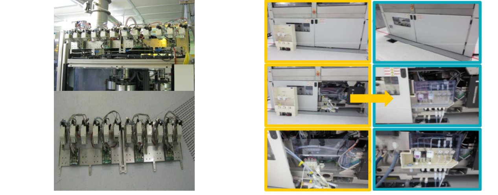
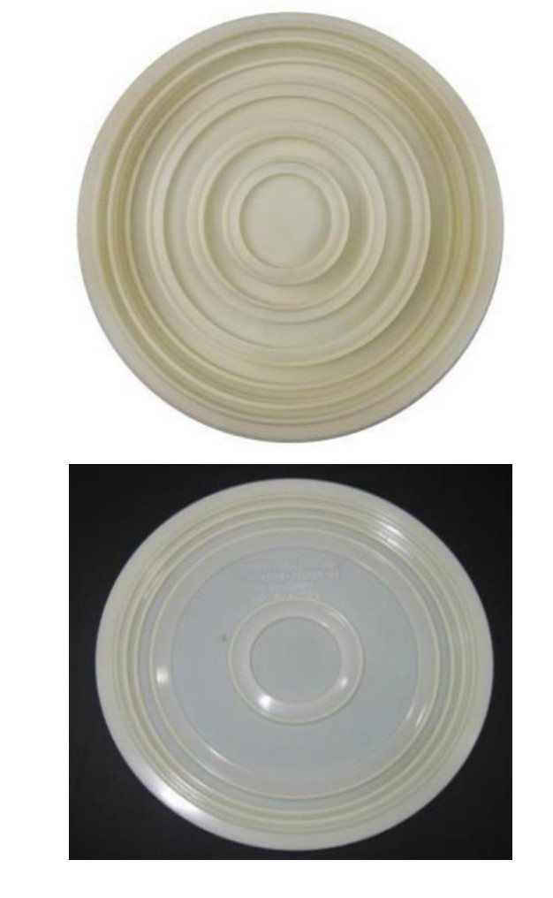
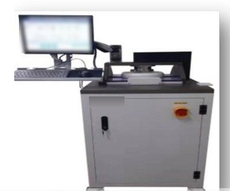
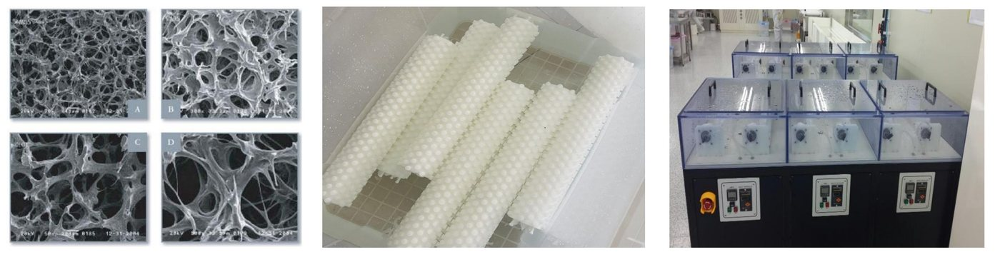

CMP
CMP 设备服务、维修、耗材及改造，一个窗口统一对接。
AMAT・EBARA 的设备服务、核心部件维修、耗材与设备改造。
CMP 设备服务
覆盖 100mm〜300mm CMP 设备
支持 CMP 设备的安装、搬迁、定期保养与翻新。
300mm CMP 设备
- AMAT Reflexion / Reflexion LK / LK-P
- EBARA F-REX300 / 300S / 300S2 / 300X
100〜200mm CMP 设备
- AMAT Mirra (Ontrak · DNS · Mesa · 3400)
- EBARA F-REX200 · EPO222 · EPO223
- IPEC 472 · Accretech · Lam Teres
服务内容
- 拆机、搬迁、安装调试与故障排除
- 设备改造
- 月度、季度、年度定期保养（PM）
- 研磨头重建
- 零部件维修与供应
CMP 服务
CMP 服务范围
可维修 CMP 驱动电机、研磨载具齿轮及模块 ― 维护需求最高的领域。
| 设备 | 模块／部件 | 服务 |
|---|---|---|
| AMAT Reflexion LK | 研磨盘・载具头・修整器驱动电机 | 维修・重绕・测试 |
| EBARA F-REX300X | 顶环・转盘・修整器驱动电机 | 维修・重绕・测试 |
| EBARA F-REX300S II | 顶环・转盘・修整器驱动电机 | 维修・重绕・测试 |
| AMAT & EBARA | PC（研磨载具）齿轮・传动系 | 维修・更换 |
| EBARA CMP | DDF3 模块 | 大修・维修 |
可根据需求扩展至其他 CMP 模块及其他工艺设备。
重点项目
驱动・主轴电机・PC 齿轮・DDF3
AMAT Reflexion LK
研磨盘・载具头・修整器驱动电机
EBARA F-REX300X／300S2
顶环・转盘・修整器电机系列
PC 齿轮・DDF3
传动系维修・更换，DDF3 大修
CMP 核心部件
CMP 核心部件翻新再生

- 零部件供应・再生・维修研磨头・主轴・机械手・驱动器・旋转接头・齿轮箱
- 设备服务安装・再生・维修・定期保养・改造
设备改造
CMP 设备改造・智能化
- 1压力检测・数据采集・自动报警（EBARA）
- 2DIW・药液泄漏检测（AMAT／EBARA）
- 3药液流量监控・自动报警
- 4排气自动风门控制
- 5自清洁系统（设备自动清洗）
- 6温度检测・自动报警（AMAT／EBARA）
- 7CCTV 摄像头设备监控（AMAT／EBARA）
- 8定制浆料歧管
- 9定制端口服务器电源
- 10研磨头主轴罩・浆料箱内置・UPA 移位

从机械结构设计到研磨液输送系统，均可按客户及机台定制。设备改造遵循贵司 MOC（变更管理）流程，经贵司事先批准后方予实施。
开发（技术合作伙伴）
CMP 耗材与设备开发（技术合作伙伴）
从保持环、隔膜、PVA 刷到测试设备，由技术合作伙伴开发和生产，对应 6／8／12 英寸。



保持环 ― 12 道生产工序
- 1原材料来料检验
- 2粗车
- 3精车
- 4螺孔加工
- 5二次精车
- 6铣槽加工
- 7销轴组装
- 8环氧胶结构灌注
- 9半成品检验
- 10预抛光
- 11成品终检
- 12清洗包装
隔膜开发流程
- 方案评审与规格确认
- 模具设计与制造
- 实验室测试与可靠性分析
- 现场跑片验证
- 工艺管控下的规模量产